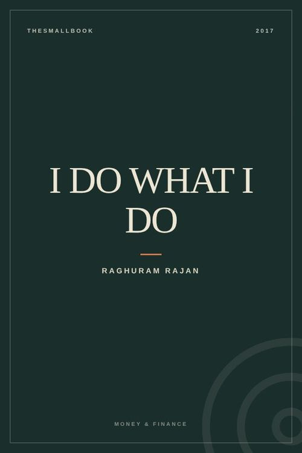
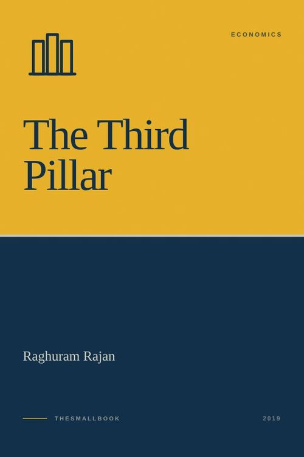

Library › Authors › Raghuram Rajan
Books by Raghuram Rajan
Raghuram Rajan has 2 books in the library. Every book here is read down to the big idea, the lessons, the lines worth keeping and the actions worth taking. Start with the summary, then buy the full book if it earns a place on your shelf.

I Do What I Do
2017 · 8 min · 6 lessons
Raghuram Rajan's speeches from his RBI tenure - fighting inflation, cleaning up bad loans and saying no to the powerful - a masterclass in integrity at work.
Raghuram Rajan - the IMF chief economist who returned to India as RBI Governor - collects his speeches from his turbulent tenure, showing what it means to make hard, unpopular decisions in public life. From fighting inflation and cleaning up India's bad-loan crisis to warning against crony capitalism, Rajan's central argument: institutions matter more than personalities - a central bank that tells uncomfortable truths, a regulator that says no to powerful friends, and an economy built on rules rather than favours....
Lessons in the summary
- The Uncomfortable Truth: Central Banking Is Saying No
- Inflation Is a Tax on the Poor: Why Price Stability Matters
- The Clean-Up: Why Bad Loans Must Be Named and Fixed
- Crony Capitalism: The Disease Beneath the Economy
- The Global Indian: Think Local, Act Global
- Institutions Before Personalities: The Real Lesson
Lines worth keeping
- The most important thing an institution does is sometimes refuse.
- Inflation is a tax on the poor.
- Build institutions, not saviours - the systems outlast the personalities.

The Third Pillar
2019 · 8 min · 7 lessons
How decaying local communities create social rupture and populist backlash.
Societies stay stable only when markets, the state, and local communities balance each other.
Lessons in the summary
- The Forgotten Third Leg
- The Rise of Distance
- Centralized Incompetence
- The Despair of the Displaced
- Restoring Local Anchors
- Inclusive Localism
- A Rebalanced Future
Lines worth keeping
- When the community weakens, people feel isolated and adrift in the face of market forces.
- Markets need rules from the state, but both need values from the community.
- Prosperity without belonging is an unstable peace.
Questions Raghuram Rajan helps answer
Read nearby authors next
- Nassim Nicholas Taleb 4 books
- Morgan Housel 3 books
- Saurabh Mukherjea 3 books
- Tony Robbins 3 books
- Michael Lewis 2 books
- Scott Galloway 2 books
- Abhijit V. Banerjee & Esther Duflo 1 book
- Abhijit V. Banerjee and Esther Duflo 1 book
Questions Raghuram Rajan helps answer
Where should I start with Raghuram Rajan? Start with I Do What I Do: Raghuram Rajan's speeches from his RBI tenure - fighting inflation, cleaning up bad loans and saying no to the powerful - a masterclass in integrity at work.